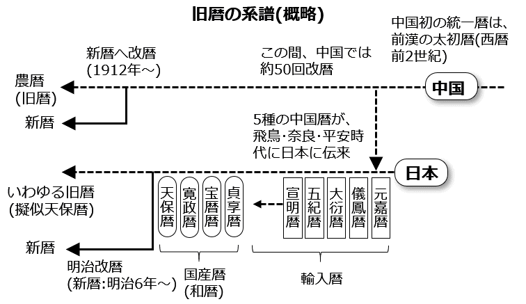
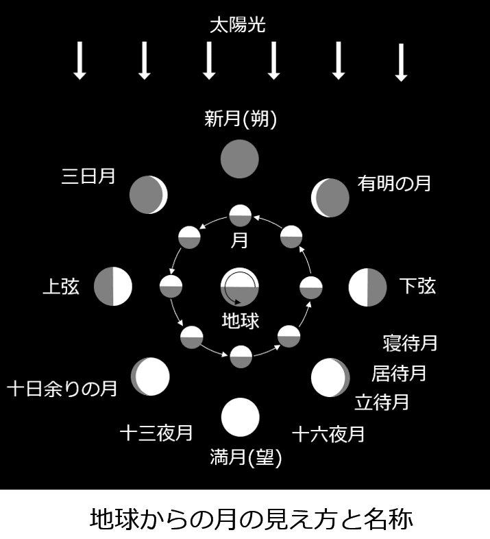
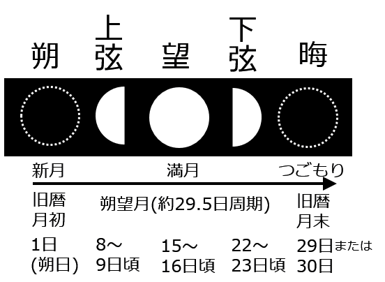
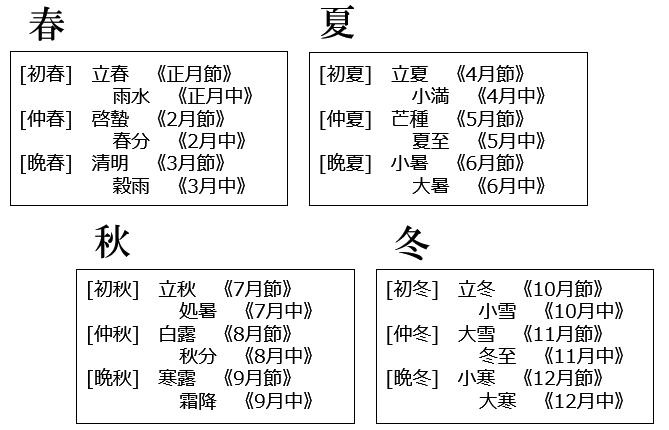
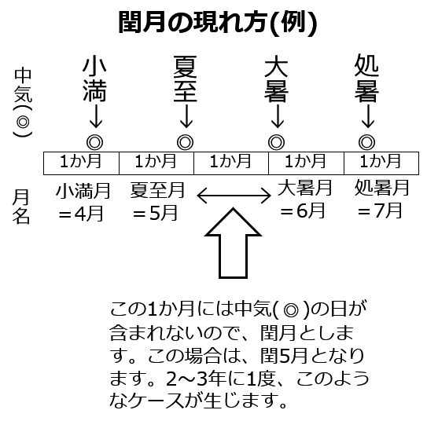
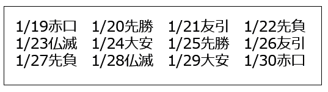
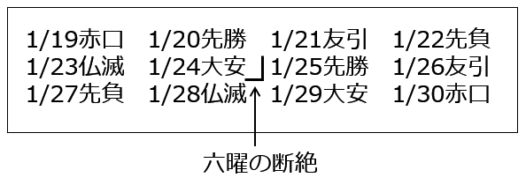
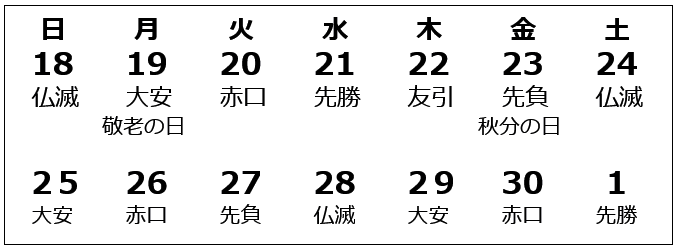
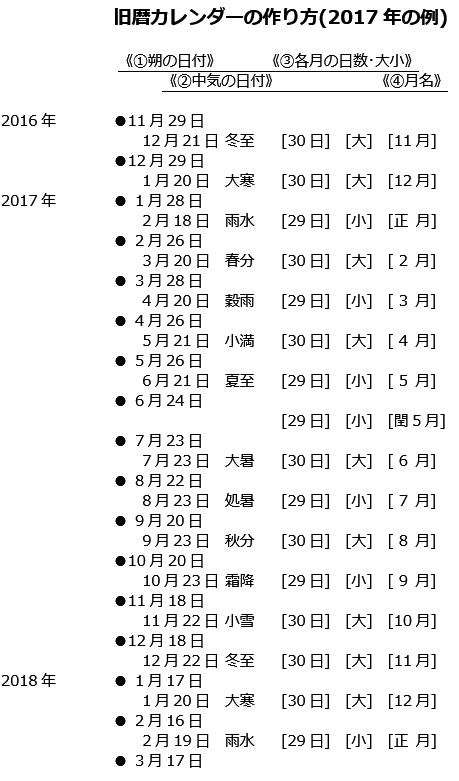
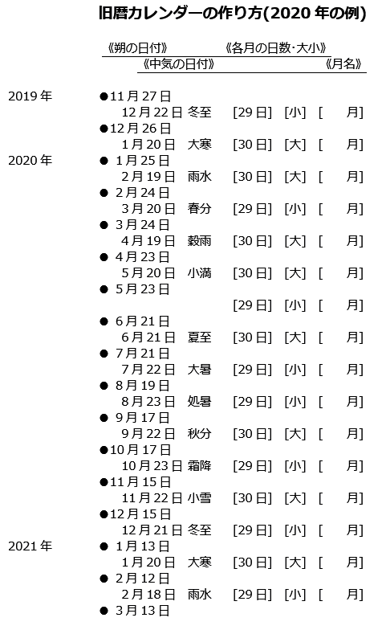

| 30分でわかる旧暦: 知れば知るほど面白い | |
| 21世紀こよみ同好会 | |
| (2018) | |
知れば 知るほど 面白い
30分でわかる旧暦
目 次
●ポイント①【旧暦は、月の満ち欠けの一巡を1か月とし、新月(朔 )の日を月初とする】
●ポイント②【月の満ち欠けの周期は、約29.5日(平均値)である】
●ポイント④【旧暦は、12か月を1年とし、2～3年に1度、13か月の閏 年 を設ける】
●ポイント⑤【暦の各月の名称(何月か)は、その1か月に含まれる中 気 で決まる】
●ポイント⑥【2～3年に1度、中気の日を含まない1か月が生ずるので、これを閏月とする】
"暦(こよみ)"は、日々の暮らしや仕事、ビジネスのうえで必要不可欠なものです。しかし、あって当たり前なので、世間の暦への関心度は、あまり変わりありません。ただ時おり、ちょっとした暦ブームが起こることがあります。たとえば、西暦2000年においては、千年に1度のミレニアム(千年紀)ということで、暦への関心が高まり、さまざまな書籍や雑誌が刊行されました。
その頃、編集に携わる仲間たちが集い、仕事がらみで旧暦のことが話題になり、勉強会をもったのが、"21世紀こよみ同好会"の始まりです。ゆるい集まりではありますが、現在に至るまで続いているのも、旧暦は知れば知るほど面白く、そして奥深く、飽きることがないからです。その間、仲間たちから出された旧暦に関する数々の疑問は、世の多くの人々の疑問であるにちがいなく、旧暦の面白さを知っていただくためにも、それをまとめてみようという提案があり、電子書籍として出版することになりました。
書籍化にあたっては、どうしたら手っ取り早く、わかりやすく、旧暦を紹介できるか考えました。旧暦に関連して興味深い話はたくさんあるのですが、まずは旧暦の世界を探索するための必携ガイドのようなものを目指しました。
実は、旧暦のしくみそのものは単純です。そこで、あれこれ寄り道せず、旧暦の基本的なしくみを6つのポイントにまとめ、書名も、『30分でわかる旧暦』としました。これを理解するだけで、旧暦の世界は霧が晴れたように見晴らしがよくなるはずです。
旧暦の基本的なしくみを、6つのポイントとしてまとめました。いずれも難しいものではありませんが、まったくの予備知識なしには、理解をさまたげることになりかねません。そこで、ご存じかもしれませんが、まずは必要最小限の予備知識を解説します。
旧暦とは、新暦に対する言葉です。日本においては、明治5年12月2日(旧暦)の翌日が、太陽暦である新暦(グレゴリオ暦)の明治6年1月1日として改暦されたため、それ以前の暦は旧暦と呼ばれるようになりました。これを明治改暦といいます。
伝統的な日めくりカレンダーはじめ、一部の月めくりカレンダーなどには、新暦の日付とともに旧暦の日付が載っていたりします。身近には、新聞のこよみ欄などにも、旧暦の日付は載っています。明治改暦後、日本では旧暦は非公式の暦となったため、公的機関は旧暦に関与していません。カレンダーなどに載る旧暦は、日本における最後の旧暦である江戸時代の天 保 暦 のしくみを踏襲して民間で作られている暦です。
旧暦は、歴史的かつ広域的にとらえることが大事です。日本ばかりでなく、中国、台湾、韓国、北朝鮮、ベトナムなどでも、基本的に同じしくみの旧暦が使われているからです。
そのルーツとなる暦は、約3500年前の中国で生まれ、約1000年にわたる暦法(暦のしくみ)の整備時代を経て、前漢の時代(西暦前104年)に現在の旧暦の原型となる暦(太 初 暦 )が施行されました。それまで、まちまちだった正月の位置が立春頃に定められたのも、この暦からです。
日本では6世紀の飛鳥時代の頃から、長らく中国伝来の5つの暦が使われ、江戸初頭に初めて国産暦(和暦)である貞 享 暦 が作られました。以後、宝 暦 暦 、寛 政 暦 、天 保 暦 と、明治改暦まで4つの国産暦(和暦)が施行されました。
中国でも1912年に新暦(グレゴリオ暦)に改暦されましたが、伝統的な旧暦は「農暦」として、新暦である「公暦」とともに実用暦として使われています。
中国と日本の旧暦の系譜を以下に示します。覚える必要はありません。日本は中国からの輸入暦時代と国産暦(和暦)時代を経て、新暦へ改暦されたことを知っておくだけで十分です。

本書における旧暦とは、
①江戸時代の天保 暦を踏襲した現在のいわゆる"旧暦"
②新暦以前の旧暦時代(飛鳥・奈良・平安～江戸時代～明治5年)の日本で使われた暦(中国暦と国産暦)
③中国暦のしくみにならって現在も使われている東アジアの国々・地域の旧暦
のいずれかの意味で用いています。
また、旧暦と同様に月の満ち欠けを基本とする西洋の暦については太陰太陽暦と呼んで、旧暦とは区別しています(日本や中国の旧暦も太陰太陽暦ですが、西洋にはない独自のしくみを取り入れているからです)。
では、旧暦のしくみのポイントの解説に移ります。
月は満ち欠けを繰り返します。この満ち欠けの一巡が、旧暦の1か月になります。
1か月の始まりは、どこに定めてもよいのですが、旧暦では満ち欠けを終えて、新たな月が立つ新月(朔 )の日を月初1日 ･朔日 )とします。つまり、新月(朔)～次の新月(朔)の前日(月末・晦 )までが1か月です。

1か月の前半は、新月(朔)・半月(上弦の月)・満月(望 )と満ちていき、後半は満月(望)・半月(下弦の月)と欠けて月末の晦 となり、その翌日の朔の日が新たな月の始まりとなります。「朔 弦 望 」あるいは「朔 弦 望 晦 」というのは、この満ち欠けを表す熟語です。
ちなみに、月初である1日(朔日)を「ついたち」というのは、新たな月が立つという意味の「月 立 ち」に由来し、月末を「つごもり(晦)」というのは、月が籠 って(隠れて)見えなくなるという意味の「月 ごもり」に由来します。
月は約29.5日の周期で満ち欠けを繰り返します。これを 朔 望 月 といいます。 29.5日(正確には29.530588...日) というのは平均値で、実際は、約29.3～約29.8日の範囲で、毎月、変動します。
月の満ち欠けは日々刻々と進行します。その進み具合は、新月が生まれた瞬間からの経過日数で表します。これを 月 齢 といいます。新月が生まれた瞬間すなわち朔が月齢0です。
暦に記載されている月齢は、その日の正午の月齢で表しています。たとえば、月齢2.5とあれば、この日の正午に、新月(月齢0)から2.5日を経ていることを意味します。
月の満ち欠けの周期は約29.5日ですが、暦の1か月を29.5日にすることはできません。暦は1日という基本単位で成り立っているからです。このため、旧暦の1か月の日数は、30日の大の月もしくは29日の小の月となります。
新暦(グレゴリオ暦)の1か月の長さは、大の月は31日、小の月は30日(2月は例外的に28日、閏年は29日)ですが、大小の月の配列は一定です。「西 向く 士 」というのが、小の月の覚え方として伝承されています。つまり、二 ・四 ・六 ・九 ・十一 月が小の月です(武士の「士」の字を漢数字の十一に見立てています)。
旧暦では、1年の大小配列が、毎年、異なります。このため、旧暦時代には、その年の大小配列を間違えないように、「西 向く 士 」のような語呂合わせほか、さまざまな覚え方が工夫されました。これを「大小暦」といいます。
月の満ち欠けに関するポイント①～③までをまとめると、以下のようになります。
旧暦においては、朔(新月)は1日(朔日)、上弦の月は8～9日頃、満月は15～16日頃、下弦の月は22～23日頃、晦は29日あるいは30日と、毎月の日付は月の満ち欠けと連動しています。このため、月の満ち欠けの度合により、一か月(約29.5日)のおよその経過を知ることができます。いわば月は夜空のカレンダーであるわけです。
なお、朔(新月)～上弦～望(満月)～下弦～晦(つごもり)の各間隔は約7日になります。これが西洋の「週」の起源といわれます。

ここらあたりから、少しややこしくなってきます。旧暦にも閏 年 があります。ただ、新暦では2月の月末に1日の閏 日 (2月29日)を加えて、1年366日の閏年としますが、旧暦では平年の12か月に閏月1か月を加えて、13か月の閏年とします。これは、一般的に、あまり知られていません。
月の満ち欠け12回の12か月で、ほぼ季節が元に戻ります。つまり、ほぼ1年が経過します。ところが、12か月というのは、日数では29.5日(1か月)×12か月＝354日で、実際の1年(太陽年)＝365日よりも約11日少なくなります。2年では約22日、3年では約33日も早まって、季節とのずれが1か月を超えてしまいます。
そこで旧暦では、2～3年に1度、閏月を加えた13か月の閏年を設けて、季節とのずれを調整します。このタイプの暦を太 陰 太 陽 暦 といいます。
2～3年に1度、閏月を加えるというのは、誰かが発明したものではなく、1年の経過を月の満ち欠けで数えることにより、世界中のどこでもごく自然に生まれたものです。本書では、これを"原初的な太陰太陽暦"と呼ぶことにします。
大昔は1年の長さ(日数)が知られていなかったので、1か月というという単位で1年を表すしかありませんでした。つまり、 1年はおよそ12か月、ときどき13か月 という大ざっぱな認識だったのです。
1年の日数が知られていなかったということは、1年の始まりをいつにするかが重要な問題でした。先史時代の遺跡(イギリスのストーンヘンジなど)には、夏至や冬至の日の出や日の入りの方角を意識していたことを示すものもあります。しかし、1年の日数を計測するというのは、大昔の人々にとって、きわめて難しいことだったのです。
人類の暦のルーツは、 1年はおよそ12か月、ときどき13か月 という原初的な太陰太陽暦です。そして、古代中国や古代ギリシャなどでは、1年の日数が知られるようになってもなお、太陰太陽暦が使用されました、
太陰太陽暦は、太陰暦と太陽暦が合体として生まれた暦ではありません。そうではなく、大昔から使われてきた原初的な太陰太陽暦から、実用的な暦(カレンダー)となる太陰太陽暦が整備され、そこからエジプトの太陽暦や純粋な太陰暦であるイスラム暦が派生したのです。これを取り違えると、とんでもない誤解が生まれてしまいます。旧暦(太陰太陽暦)のルーツも、エジプト太陽暦やイスラム暦のルーツも、みな原初的な太陰太陽暦です。
なお、旧暦もイスラム暦も、ともに月の満ち欠けを1か月とする暦なので、陰暦(太陰暦)と呼ばれることがありますが、異なるタイプの暦です。
旧暦は2～3年に1度、閏月を置いて13か月の閏年とする太陰太陽暦ですが、純粋な陰暦(太陰暦)であるイスラム暦は、閏月を入れず、1年12か月(約354日)の平年を繰り返します。当然ながら、毎年、約11日ずつ季節とずれていくので、年初の季節も約16年で逆転してしまいます。イスラム暦は宗教暦として用いているもので、生活上は別の暦が使われます。
中気とは、「二 十 四 節 気 」を構成する「十二節 気 」と「十二中 気 」の中気のことです。
二十四節気については、「今日は二十四節気の立春の日です」などと、テレビのお天気ニュースで報じられたりするので、誰もがある程度は知っているはずです。もともとは西暦前7世紀ごろに作られた中国の季節暦(黄河中流域の気候に基づきます)だったのですが、のちに暦づくりにも利用されるようになり、現在の旧暦においても、きわめて重要な役割を担っています。
二十四節気は1年を24等分して、12の「節気(節)」と12の「中気(中)」で表したもので、約15日ごとに節気と中気が交互に繰り返されます。
《十二節気》
立 春 啓 蟄 清 明 立 夏 芒 種 小 暑 立 秋 白 露 寒 露 立 冬 大 雪 小 寒
《十二中気》
雨 水 春 分 穀 雨 小 満 夏 至 大 暑 処 暑 秋 分 霜 降 小 雪 冬 至 大 寒
このうち、暦づくりで大事なのは、十二中気のほうです。
毎月、月の満ち欠け(1か月)は繰り返されますが、どの1か月を年初の月(正月)とするか決めなければ暦はつくれません。
平均29.5日で満ち欠けを繰り返す1か月には、通常、いずれかの中気の日が含まれます。そこで、旧暦では、中気の一つである雨 水 の日を含む1か月を正月と定め、雨水に続く中気すなわち春 分 、穀 雨 ...大 寒 を、それぞれ2月、3月...12月の各月の指標としています。
つまり、十二中気は、その1か月が暦の上で何月であるかを示す身分証となるわけです。これは重要なポイントです。
正月から12月までの暦の各月(①～⑫月)は、指標となる中気の名をとって、
①雨水月 ②春分月 ③穀雨月 ④小満月 ⑤夏至月 ⑥大暑月 ⑦処暑月 ⑧秋分月 ⑨霜降月 ⑩小雪月 ⑪冬至月 ⑫大寒月 とも称されます。
月の満ち欠けに基づく毎月を暦 月 というのに対して、これらは節 月 と呼ばれます。
このため、二十四節気は、立春＝正月節 雨水＝正月中 啓蟄＝2月節、春分＝2月中...小寒＝12月節、大寒＝12月中というように、ほぼ対応する暦月名をあてて表されることもあります。ただし、月という名がついていますが、月の満ち欠けとは連動していません。
また、12の節月は、
[三春]初春・仲春・晩春
[三夏]初夏・仲夏・晩夏
[三秋]初秋・仲秋・晩秋
[三冬]初冬・仲冬・晩冬
という季節区分と対応します。要するに、二十四節気という季節暦は、太陽暦の一種です。
以上をまとめると、次のようになります。

二十四節気という季節暦は、太陽暦の一種です。旧暦は月の満ち欠けに基づく太陰暦と、二十四節気という太陽暦をあわせもつ二重構造の暦なのです。
雨水の日を含む1か月が正月の指標とされたのは、1年の始まりが立春の頃が望ましいという考え方によるものです。これを立春正月思想といいます。立春は新暦では2月4日頃で、寒さが緩み、農作業の準備を始める適期とされたからです。
立春は二十四節気の正月節とも称されるように、立春の日が元日(正月一日)になるのが理想です。しかし、二十四節気と月の満ち欠けは連動していません。そこで、旧暦は立春に最も近い新月(朔)の日が元日となるように設計されています。
雨水の日を含む1か月を正月することで、立春に最も近い朔の日が元日となり、その結果、旧正月(旧暦元日)の日が、毎年、立春前後で移動を繰り返すことになります。旧正月の日が新暦の2月であったり、1月であったりするのは、このためです。
雨水の日を含む1か月が正月＝年初の月と正式に定められたのは、前漢の武帝の時代(西暦前104年)に施行された中国初の統一暦である太 初 暦 からです。以後、中国では一時期の例外を除いて、立春正月が踏襲され、現在に至っています。中国から伝来した暦のしくみを用いた日本や、東アジアの国々でも立春正月が定着しました。
ちなみに年賀状などに書かれる「賀春、迎春、頌 春 」という賀詞は、立春正月思想により、立春を祝うものです。昔から、元日(1月1日)を年初とする考え方と、立春を年初とする考え方がありました。元日は暦日における年初、立春は季節的な年初です。
これが、中国や日本の旧暦のしくみの核心です。ポイント⑤で解説したように、旧暦は月の満ち欠け12か月を1年(平年)とし、2～3年に1度、13か月の閏年を設けて、季節とのずれを調整します。
13か月の閏年を設ける同様の太陰太陽暦は、古代バビロニアやエジプト、ギリシャなどでも使用されていました(のちにエジプトは、1年の日数を運よく発見したことから太陽暦を採用)。
しかし、「2～3年に1度、閏年を設ける」というのは、かなりあいまいです。政治的な作為などで閏年が決められたりしないように、できるだけ規則化することが求められました。
また、当初、閏月は年末に入れていたのですが、それでは、翌1年目はさほど季節とのずれは目立たないものの、2年目、3年目となるにつれ、各月の季節とのずれが積み重なり、しだいに大きくなっていきます。このずれを全体で平均化して小さくし、季節との調和をうまく図るには、どの年のどの月を閏月するかということが重要になってきます。これを 置 閏 法 といいます。
古代バビロニアにおいては8年に3回の閏年を設ける置閏法(8年3閏法)が使われていました。割り算すると、2.66...年に1度の閏年となります。その後、古代ギリシャや古代中国では、19年に7回の閏年を設ける置閏法(19年7閏法)が採用されました。現在の旧暦でも、閏年はほぼ19年に7回となります。割り算すると、2.71...年に1度の閏年となります。
さらに精密にするために、古代ギリシャでは19年を4倍にした76年周期の置閏法や、さらに4倍にした304年周期の置閏法も考案されました。しかし、こうしたやり方では、いくら精密にしても端数は処理しきれず、永遠に終わりはありません。置閏法を数式で公式化することはできないのです。
そこで、中国では二十四節気を利用することで、面倒な計算を必要としない便利な置閏法を考案しました。それは、 二十四節気の中 気 の日を含まない1か月が、2～3年に1度、生じるので、これを閏月とする というものです。規則としては、ごく単純なものですが、実に画期的なアイデアで、これこそが中国や日本はじめ東アジア諸国で使われている旧暦の最大の特長です。重要なポイントなので、以下に補足説明します。これが理解できれば、旧暦のしくみの基本をマスターしたことになります。
「2～3年に1度、中気の日を含まない1か月が生じるので、これを閏月とする」という規則を素直に受け入れるにしても、では、「2～3年に1度、中気の日を含まない1か月が生じる」とは、どういうことなのでしょうか？
ポイント⑤で解説したように、1月から12月までの毎月を季節循環と調和させるため、 二十四節気のうちの12の中気をもって、1月から12月まで各月の指標としました。これで季節循環との大きなずれがなくなり、一件落着、めでたし、めでたしとなりそうですが、そうはいきません。
12の中気～中気の間隔は、1年365日÷12＝約30.4日で、かたや月の満ち欠け1か月の長さは約29.5日です。このため、2～3年に１度、まるまる1か月が中気～中気の30.4日の中に、すっぽりおさまってしまうということが起こります。
こうなると、その1か月には中気の日は含まれません。中気の日を含まなくても、通常の1か月と変わりありませんが、何月かを名乗ることができません。そこで、中国ではこれを閏月とすればよいと考えついたのです。
たとえば、夏至は5月の指標となる中気(5月中)、大暑は6月の指標となる中気(6月中)ですが、ある年において、《夏至(5月中)を含む1か月》《中気の日を含まない1か月》《大暑(6月中)を含む1か月》と続いた場合、《5月》《閏5月》《6月》とするのです。
以下の図を見れば、中気を含まない1か月とは、どういうものかがわかるでしょう。中気と中気の間に、ぎりぎりに納まるというケースです。これが2～3年に1度、 もう少し正確にいうと、19年に7度 、生じるのです。

この置閏法は、中国の暦における画期的な発明です。12の中気を指標として、各月の名称(何月か)を定めていけば、 2～3年に1度 、中気が含まない1か月が必ず現れるので、それを閏月とするだけです。どの年のどの位置に閏月を置くかというやっかいな問題から解放され、面倒な計算することなしに、自動的に閏月が定められるからです。この置閏法は、前7世紀頃の中国で発明されたといわれます。
2016年に二十四節気がユネスコの無形文化遺産に登録されました。二十四節気は単なる季節暦ではなく、中国独自の置閏法に利用され、東アジアの旧暦に今も生かされているからです。
以上が旧暦のしくみを知る6つのポイントです。しくみそのものは、それほど難しくありません。
旧暦のしくみとは直接関係ありませんが、六曜を利用して旧暦の日付を知る方法があるので以下にご紹介します。
大安や仏滅...といった六曜は、もともと時刻占いに用いられたもので、中国から日本に渡来してから変容し、日の吉凶占いに用いられるようになりました。科学的な根拠のない迷信ですが、六曜を利用して旧暦の日付を知る方法があり、覚えておくと役に立ちます。
たとえば、以下は、2020年のカレンダーの一部です。

旧暦の情報はどこにも載っていません。しかし、六曜の配列から、すぐに1月25日が旧正月(旧暦元日)であることがわかるのです。まるで手品のような裏ワザです。
種明かしをしましょう。
六曜は、先勝(せん か ち)・友引( と もびき)・先負(せん ま け)・仏滅( ぶ つめつ)・大安( た いあん)・赤口( し ゃっこう)の単純な繰り返しです。
この順番を、六曜の読みの頭文字などの1字(下線部)をとって、「かとまぶたし」と覚えます。六曜が載っているカレンダーで六曜を追ってみると、確かに「かとまぶたし」の単純な繰り返しであることがわかります。
ただし、旧暦の毎月の月初(1日)は、次の六曜から始めるという規則があります。これも、「かとまぶたし」の順となっています(閏月の場合、月初は前月と同じ六曜から始めます)。
[旧暦] [月初(1日)の六曜]
１月・７月 先勝(せんかち)
２月・８月 友引(ともびき)
３月・９月 先負(せんまけ)
４月・10月 仏滅(ぶつめつ)
５月・11月 大安(たいあん)
６月・12月 赤口(しゃっこう)
さて、この規則があるために、「かとまぶたし」という配列は、旧暦の月替わりすなわち各月の「月末の日」で連続性が失われて断絶します。この断絶箇所を見つけることで、旧暦の月初の日を見つけることができるのです。
前述の例では、「かとまぶたし」という六曜の配列が「...しかとまぶた[断絶]かとまぶたし...」と、「た」と「か」の間で断絶しています。

ということは、1/24大安が旧暦の月末で、1/25先勝が旧暦の月初となることがわかります。前述の表より、先勝が月初となるのは、旧暦1月または旧暦7月です。新暦と旧暦のずれは約1か月なので、1/25先勝の日が、旧正月(旧暦元日)であることがわかるのです。
(注：閏月の月初の六曜は、前月の月初と同じにするという規則があり、1/25先勝は、閏1月1日であるとも考えられます。しかし、1/25を月初とする1か月には、正月の指標となる中気の雨 水 (新暦2月19日頃)が含まれるので、閏1月となることはありえません)。
では、練習のため、次の問題を解いてみてください。
【練習問題】次のようなカレンダー(新暦)の断片がありました。[29]という日は、旧暦では何月何日になるでしょうか？ また、この日の空に見える月は、どのような形をしているでしょうか？

旧暦の日付情報はなく、新暦の月名もわかりませんが、六曜が載っています。
この例では、「かとまぶたし」が繰り返される六曜の連続性は、26日と27日の間で失われ、「...ぶたしかとまぶたし[断絶]まぶたしか...」となっています。
また、旧暦のしくみのポイントで解説したように、毎月の日付は月の満ち欠けと連動しているので、旧暦9月3日の月の形(月 相 )は新月から3日目の「三日月」であることもわかります。
旧暦の月初の日の六曜は決まっているという前述の規則により、旧暦5月1日、旧暦11月1日は大安です。そこから、「 旧暦の日付の月と日の数を足して、6の倍数なら、その日は大安 」という規則が導かれます。これは便利な規則で、覚えておくと任意の旧暦の日付の六曜を知ることができ、月初の日の六曜の規則を覚える必要もなくなります。
たとえば、旧暦8月1日は、月と日の数を足すと9になります。6の倍数が大安になるので、9に近い6の倍数を探します。6または12です。6(大安)から「かとまぶたし」の六曜をあてはめていくと、「6(た)・7(し)・8(か)・ 9(と)...」で、9は友引となります。また、 12の大安から逆順にあてはめていくと、「...9(と)・10(ま)・11(ぶ)・12(た)」で、やはり9は友引になります。こうして、旧暦8月1日は友引となることがわかります。同様に、各月の月初の日の六曜が求められます。
【練習問題】中秋の名月いわゆる十五夜の日の六曜は何になるでしょう。
十五夜は旧暦8月15日の行事です。月と日の数を足すと、8＋15＝23となるので、23に近い6の倍数を探します。18または24で、この日は大安です。
18の大安から「かとまぶたし」の六曜をあてはめてみると、「18(た)・19(し)・20(か)・21(と)・22(ま)・23(ぶ)...」となり、23日は仏滅(ぶ)であることがわかります。24から逆順にあてはめても仏滅となります。
以前、某大手新聞の有名コラムに、「なぜか十五夜は毎年仏滅」と書かれていましたが、六曜の規則から必然的に仏滅になるわけです。
日本のいわゆる旧暦は非公式の暦であることから、「旧暦はいったい誰が、どこで作っているのか？」という疑問がよく聞かれます。
年末が近づくと、書店などで翌年用のカレンダーフェアが開催されます。伝統的な日めくりカレンダーはじめ、新暦カレンダーに旧暦カレンダーを併載したカレンダーや、新暦カレンダーの日付部分に月の満ち欠けのようすを載せたムーンカレンダーなど、さまざまなカレンダーが並びます。運勢暦や開運暦などと呼ばれる暦にも、旧暦は載っています。
旧正月(旧暦元日)にあたる春節や十五夜にあたる中秋節(旧暦8月15日)などが、国の祝日と定められている中国では、旧暦が公的機関によって管理されています。日本においては、公式の暦(新暦)は国立天文台の 暦 計 算 室 が管理していますが、明治6年の改暦により、旧暦は非公式な暦となったため、暦計算室は旧暦には関与していません。では、書店などに並ぶ旧暦カレンダーは、誰が作っているのでしょうか？
実は旧暦カレンダーは誰でも簡単に作れるのです。その作り方をご紹介します。
必要なのは、朔の日付と、十二中気の日付です。国立天文台の暦 計算室では、毎年2月に、翌年の 朔 弦 望 や二十四節気の日時 などを 暦 要 項 として発表します。また、これらの日付などのデータは、民間でもコンピュータを用いて過去から未来にわたって計算されているので、それを利用してもかまいません。
以下は、2017年の旧暦カレンダーの作成例です。この年は旧暦の閏年にあたり、旧暦の置閏法を知るうえで好適なので選びました。

《旧暦カレンダーの作り方》
①横書きノートなどに、１行おきに朔の日付を書き出します。例：●11月29日 (●は朔を表す目印)。
②十二中気とその日付を、朔の日付の間に挿入していきます。例：12月21日 冬至
③朔から次の朔の前日(晦)までが、旧暦の1か月です。各月の日数を数え上げて[ ]内に書き入れます。必ず30日か29日になります。30日であれ大、29日であれば小と、[ ]内に書き入れます。こうして大小配列も定まります。
④月の大小配列がわかっても、まだ各月が何月か定まっていません。前述したように、旧暦においては、その1か月に含まれる中気によって、何月という名称が定まります。
十二中気の一つである「 雨 水 の日を含む1か月が正月 」となると覚えておけば十分です。あとは、中気に応じて、順番に2月、3月...と決めて、[ ]内に書き入れていけばよいのですが、よく見てください！ 6月24日から7月22日までの1か月は、中気の日がありません。
中気がなければ何月か決めることができません。そこで、この月は閏月となります。夏至の日を含む前月が5月、大暑の日を含む翌月が6月ですから、この月は閏5月となります。
こうして、新暦1月28日を旧暦元日として、翌年2月15日を大みそかとする2017年の旧暦カレンダーができあがりました。この年の大小配列は、 「小大 小大 小小大小大小大大大」となることもわかります。
このように、朔の日付と12中気の日付のデータがあれば、旧暦カレンダーは誰でも簡単に作れます。あまりにも簡単なので拍子抜けしたかもしれません。昔の人々は暦づくりに、多大な労力を要したのに、こんなに簡単でよいのでしょうか？
これは 朔弦望の日時、二十四節気の日時というデータ を、天下り的に流用しているからです。このデータを得るために、国立天文台では毎日、太陽や月、星の運行を観測し続け、暦要項として発表しているのです。
観測装置や技術が未熟だった昔は、正確なデータを得るのが困難でした。つまり、旧暦数千年の歴史は、いかにこのデータを正確に得るかの歴史だったのです。
練習用に、2020年の旧暦カレンダーを用意しました。それぞれの月が何月になるか、空欄を埋めてください。答えは、「あとがき」の末尾に載せてあります。

2016年に二十四節気がユネスコの無形文化遺産に登録されましたが、東アジアの多くの国で今なお使われている旧暦そのものが歴史的な文化遺産です。
本書でご紹介した旧暦のしくみのポイントは、旧暦の世界を探索するための基礎知識です。旧暦のしくみそのものは簡単ですが、そこから、さまざまな疑問がわいてくるはずです。それを謎解きのように明らかにして、なるほどと納得するのも、旧暦の面白さです。旧暦に関連した興味深い話を集めた本書の続編の出版も構想しています。
《「旧暦カレンダーの作り方(2020年の例)」の答え：空欄には、上から順に「11月、12月、正月、2月、3月、4月、閏4月、5月、6月、7月、8月、9月、10月、11月、12月、正月」が入ります。》